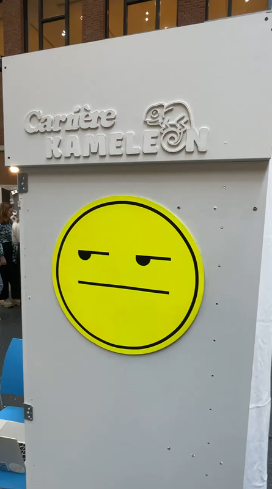
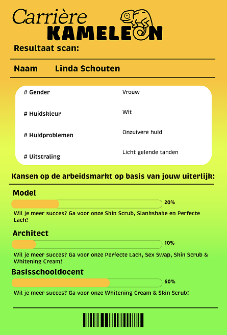
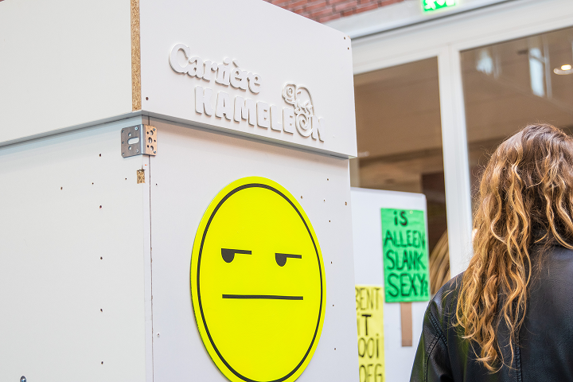
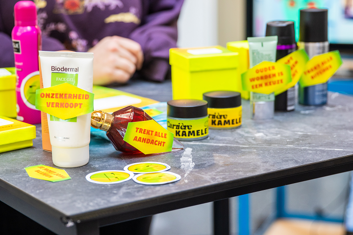
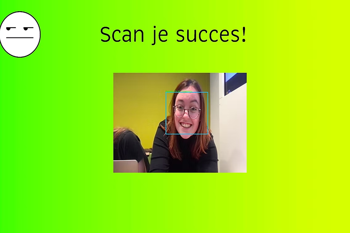

Back to projects
Back to projects
Wij zijn teleurgesteld - social design campaign
Wij Zijn Teleurgesteld (We Are Disappointed) is a campaign that challenges the beauty industry and the unrealistic standards it promotes. Beauty standards influence many aspects of our lives, from job interviews, where appearance can affect how someone is perceived, to advertisements designed to convince us that we need certain products to improve the way we look. With this in mind, I collaborated with a team to develop two concepts that criticise and challenge these toxic beauty standards: One in the form of a documentary where we ask people if they think they're pretty and one in the form of a protest. We designed eyecatching stickers to stick on questionable beauty products in shops. We also designed and programmed a scanner to scan people's succes on the job market based on their looks.

Carrière Kameleon




